fUGE
A small DAW for Game Boy music and sound effects.
fUGE (short for subterfUGE) lets you write Game Boy music on a piano roll instead of in a tracker. Underneath, it works the way the Game Boy does: the sound you hear comes from an emulation of the Game Boy's sound chip, driven by a port of hUGEDriver, the same music driver GB Studio and GBDK games use. What you hear in fUGE is what plays in your game.
Songs export as hUGETracker .uge files, which open in hUGETracker and drop straight into GB Studio. Sound effects export as .vgm for GB Studio, or .wav for any other engine.
Use the search box (or press /) to find a topic quickly. In fUGE, the ? button or F1 opens this page.
Running fUGE
fUGE runs in your browser, either online or by opening index.html from the download. There's nothing to install, and the download works offline because everything it needs, fonts included, comes with it. Chrome, Edge, Firefox and Safari all work.
Browsers only allow sound after you've clicked or pressed a key on the page, so the first note you play starts the audio.
A tour of the screen
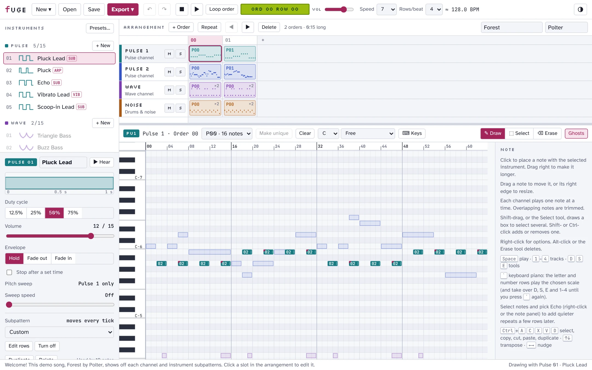
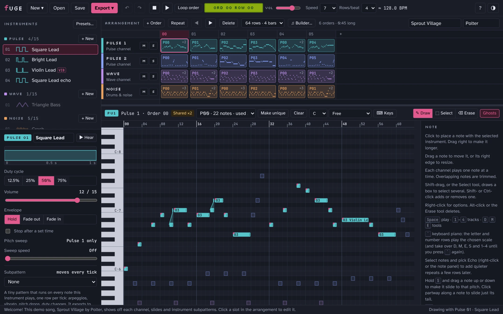
- Top bar: New, Open, Save and Export; undo and redo; stop, play and loop; the position display; output volume; the song's speed and rows per beat; the light/dark switch and help.
- Instruments (left): every instrument in the song, grouped by channel type, with the editor for the selected one underneath.
- Arrangement (top): the song's structure. Each column is an order, and each row is one of the Game Boy's four channels.
- Pattern editor (bottom): the piano roll for the slot you've selected in the arrangement, with its toolbar above.
- Note panel (right): details of the selected notes, or tips when nothing is selected.
- Status bar (bottom): what just happened on the left, and what you're drawing with on the right.
Drag the bar between the arrangement and the pattern editor to give either one more room.
Your first song
The first time you open fUGE it loads a demo song, Forest by Polter. Press Space to hear it, and click around the arrangement to see how it's built.
- Choose New ▾ → New song. A blank song comes with a few starter instruments.
- Click the first slot in the Pulse 1 row of the arrangement.
- Pick an instrument in the sidebar, then click in the piano roll to place a note. Drag right while placing it to make it longer.
- Press Space to play. Press it again to stop.
- Click + Order to add the next section, and fill the other channels in the same way: a bass line on Wave, drums on Noise.
- Save keeps the project as a
.fuge.jsonfile; Export writes the.ugefor your game.
Arrangement and orders
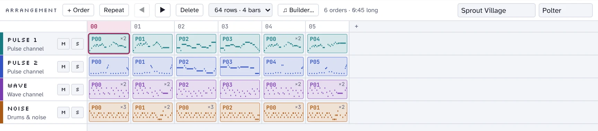
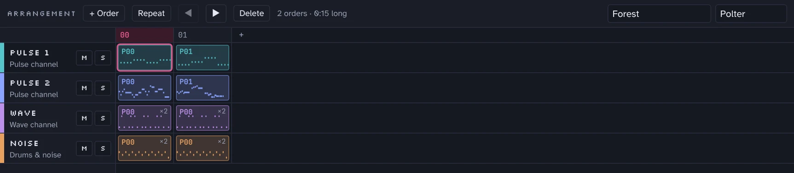
A song is a list of orders, played left to right. Each order holds one pattern (or nothing) for each of the four channels, and lasts 64 rows. The arrangement shows the orders as columns and the channels as rows, with a small preview of each pattern.
- Click a slot to edit its pattern below. Double-click an empty slot to give it a new pattern.
- + Order inserts an empty order after the selected one; the + at the end of the row adds one at the end.
- Repeat inserts a copy of the selected order that uses the same patterns, so an edit to one changes both.
- ◀ ▶ move the selected order; Delete removes it.
- M and S on each channel mute or solo it. Muted channels are also left out of
.wavexports, so you can bounce separate stems. - Right-click a slot, an order number or a channel name for more options.
The info next to the buttons shows how many orders there are and how long the song lasts.
Patterns
A pattern is 64 rows of notes for one channel. The same pattern can appear in several orders; the slot shows ×2, ×3 and so on when it does, and the pattern editor shows Shared. Editing a shared pattern changes every place it's used, which is handy for repeated drum loops and choruses.
- The menu in the pattern toolbar picks which pattern a slot plays, makes a + New pattern, or empties the slot.
- Make unique gives this slot its own copy, so you can change it without touching the others.
- Clear removes every note in the pattern.
Drawing notes
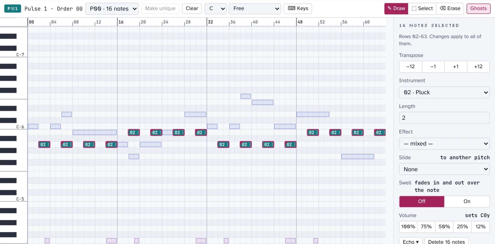
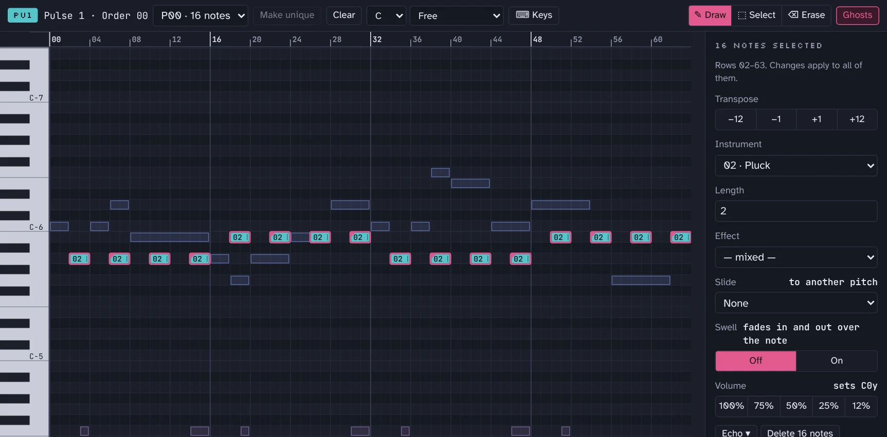
With the Draw tool (D), click the piano roll to place a note with the selected instrument. Drag right as you place it to set its length; the next note you draw uses the same length. The number on each note is its instrument.
- Drag a note to move it, or drag its right edge to resize it.
- Each channel plays one note at a time, so a note that overlaps another trims or replaces it.
- Click the piano keys on the left to hear a pitch.
- Ghosts shows the other pitched channels' notes faintly behind your own, so you can line parts up.
- A note ends where you drew it: fUGE adds a note cut there for you on export, unless another note starts on that row.
Selecting and editing
- Select several: drag a box with the Select tool (S), or Shift-drag with any tool. Shift- or Ctrl-click adds or removes single notes; Ctrl+A selects the whole pattern.
- Move and transpose: ← → nudge by a row (Shift for a beat); ↑ ↓ transpose by a semitone (Shift for an octave).
- Copy and paste: Ctrl+C, X, V. Paste goes where the mouse is, and works across tracks of the same kind (between Pulse 1 and Pulse 2, for example). Ctrl+D duplicates the selection straight after itself.
- Delete: Delete, the Erase tool (E), or Alt-click.
- Undo: Ctrl+Z, and Ctrl+Shift+Z to redo.
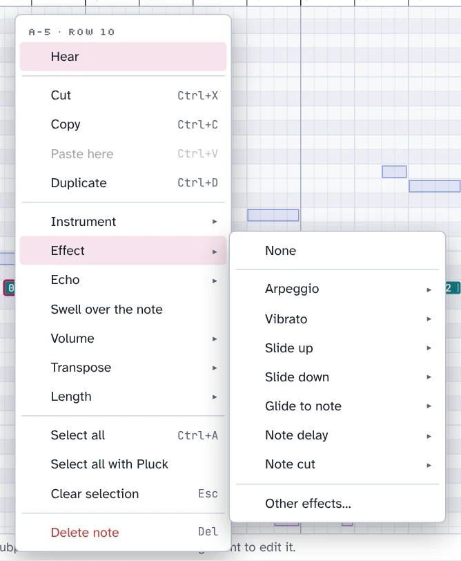
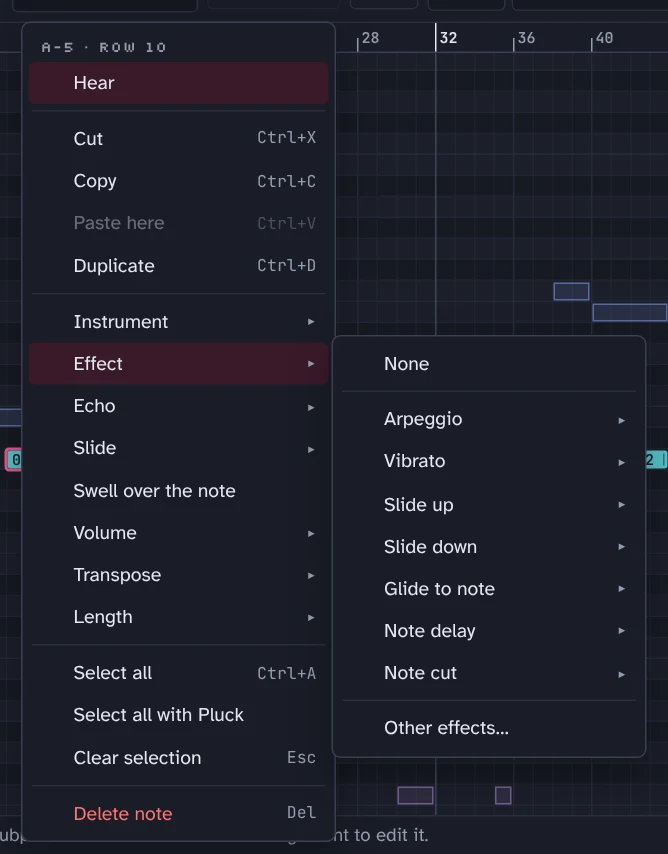
Right-click a note (or a selection) for a menu of everything you can do to it: change its instrument, effect, volume, length or pitch, add an echo, turn on swell, select every note with the same instrument, and more. Right-click empty space to switch tools or paste.
fUGE uses its own right-click menus everywhere except text boxes.
The note panel
The panel on the right of the piano roll edits the selected notes. With several selected, every change applies to all of them, and fields that differ show mixed.
- Pitch, instrument, row and length for a single note; transpose buttons for several.
- Effect: one hUGE effect per note, with its two settings (
xandy). See Note effects. - Swell: fades the note in and out over its length. See Swell.
- Volume: one click to set the note's volume (it writes a
C0yeffect). - Echo ▾ adds quieter repeats. See Echo.
With nothing selected, the panel shows a short list of tips and shortcuts.
Drums on the noise track
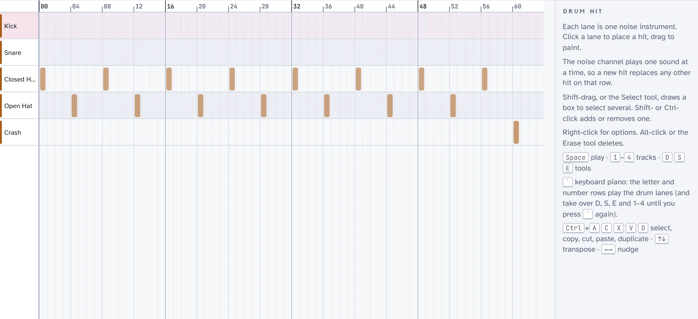
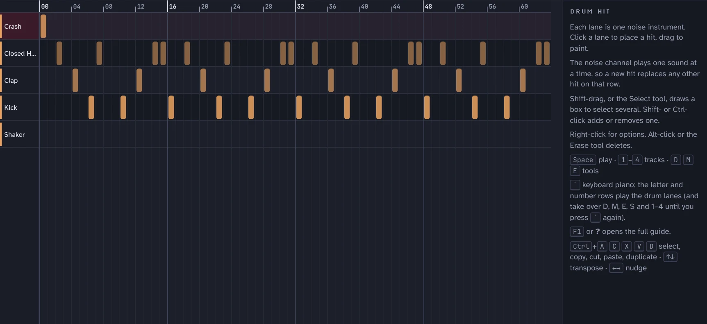
The noise track works like a drum machine. Each lane is one noise instrument (kick, snare, hat and so on). Click a lane to place that hit, or drag along it to paint several. Only one hit can sound at a time, so a new hit on a row replaces any other hit there. A hit keeps sounding until the next hit or until its own envelope fades out.
Each hit plays its instrument's default pitch. To change one hit's pitch, select it and use the Pitch slider in the note panel; hits with a changed pitch show a small dot.
Scale highlighting
The key and scale menus in the pattern toolbar darken every row that isn't in the chosen scale, so it's easy to stay in key. They only change the display, never your notes, and the choice is saved with the project. Choose Free to turn it off.
The scales include the seven modes (Major/Ionian, Dorian, Phrygian, Lydian, Mixolydian, Minor/Aeolian and Locrian), harmonic and melodic minor, Phrygian dominant, minor blues, Chinese, Romanian, and major and minor bebop. The keyboard piano follows the same scale.
Speed and tempo
Game Boy music runs on ticks, about 60 per second (59.73 to be exact). Speed is how many ticks each row lasts, so a lower number plays faster. At speed 7, a row lasts about 0.12 s.
Rows/beat only changes the grid lines and the BPM readout next to it. It doesn't change the sound. With 4 rows per beat, speed 7 is about 128 BPM.
To change speed partway through a song, use the Set speed effect (Fxx) on a note.
Playing back
- Space or ▶ plays from the selected order; press again to stop. The arrangement and piano roll follow the playhead.
- Click the ruler above the piano roll to start from that row (a small marker shows it). ■ with nothing playing resets it to the start.
- Loop order keeps repeating the selected order, which is handy while you work on one section.
- The green display shows the current order and row. VOL sets fUGE's output volume (not the song's).
The four channels
The Game Boy has four sound channels, and each plays one note at a time:
| Channel | Sound | Good for |
|---|---|---|
| Pulse 1 | Square wave with four pulse widths, a volume envelope and a pitch sweep. | Leads, chords as arpeggios, sweeping sound effects |
| Pulse 2 | The same, without the sweep. | Harmony, counter-melody, echoes |
| Wave | Plays a 32-step waveform you draw, at four volume levels. | Bass, soft leads, pads |
| Noise | Noise with an envelope, smooth or metallic. | Drums, explosions, hits |
Pulse instruments play on either pulse channel; wave and noise instruments only play on their own. Pitched notes run from C-3 to B-8, following hUGETracker's note names.
Instruments
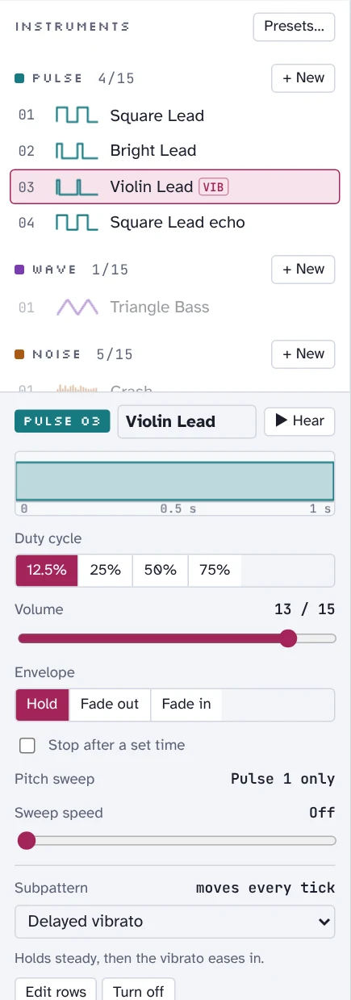
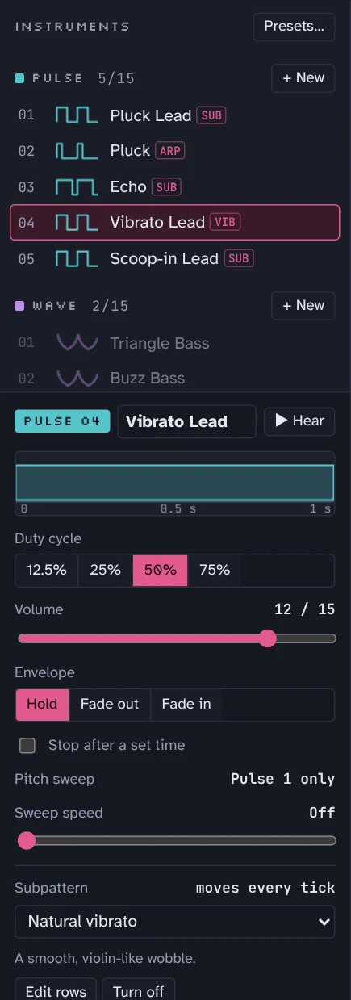
The sidebar lists the song's instruments by type: pulse, wave and noise. A song can have up to 15 of each, as in hUGETracker. A small tag shows when an instrument has a subpattern: ARP, VIB or SUB.
- Click an instrument to draw with it and edit it below. Picking an instrument of another type switches to its track.
- + New adds a blank instrument; Presets… adds a ready-made one.
- ▶ Hear plays it; most changes in the editor also play it so you hear the difference.
- Duplicate and Delete are at the bottom of the editor, and in the right-click menu. Deleting an instrument also removes its notes.
Editing an instrument changes every note that uses it, across the whole song.
Copying instruments between projects
Right-click an instrument and choose Copy instrument. fUGE remembers it even after you open another project or reload the page. Then, in any project:
- Paste instrument (right-click the instrument list or any instrument) adds it as a new instrument, subpattern and waveform included. If the name is already taken, it gets a number on the end.
- Paste settings into … (right-click an instrument of the same type) replaces that instrument's sound but keeps its name, so every note already using it plays the new sound. Ctrl+Z undoes it.
Presets
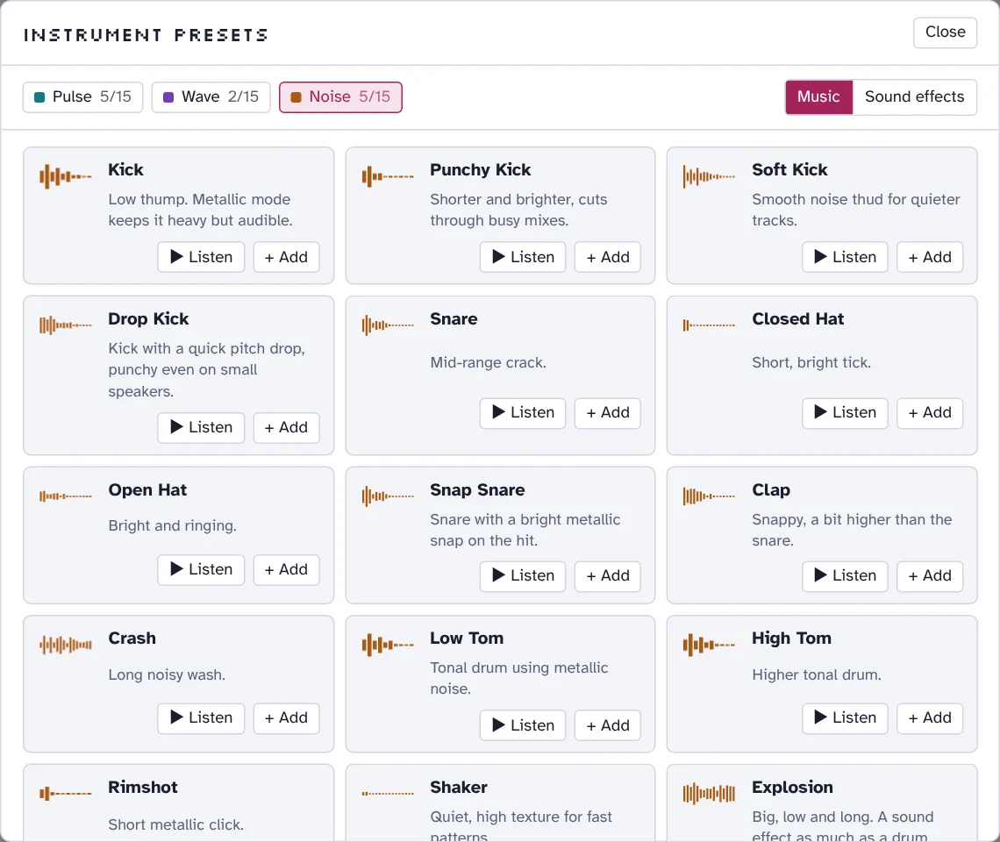
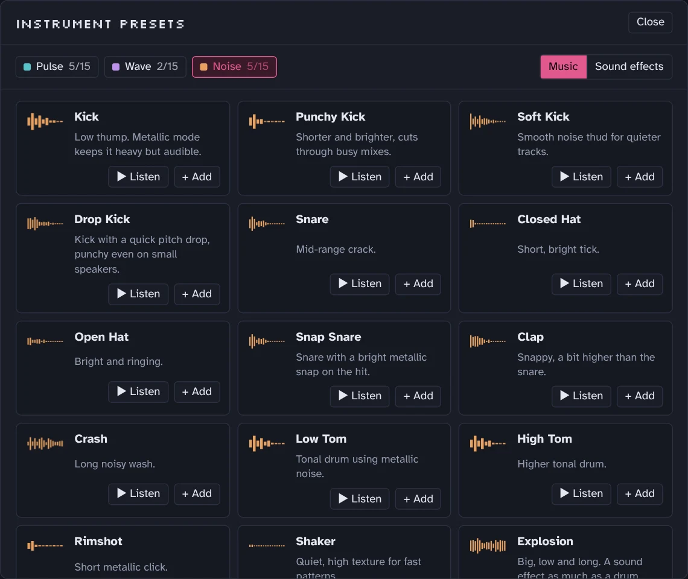
Presets… opens a library of instruments for each channel type, split into Music and Sound effects. Press ▶ Listen to try one, and + Add to put a copy in your song. Presets are a starting point: once added, they're ordinary instruments you can change.
Some highlights: leads, plucks, bells, swells and echoes for pulse; triangle and deep basses, saw, organ, flute and pads for wave; kicks, snares, hats, toms and crashes for noise; and jumps, coins, lasers, explosions and menu blips in the sound-effect group.
Pulse instruments
- Duty cycle: the pulse width. 50% is the full, hollow square; 25% and 12.5% get thinner and more nasal; 75% sounds the same as 25%.
- Volume and envelope: Hold keeps the volume steady; Fade out and Fade in step the volume down or up at the Fade speed. The graph shows the volume over the first second.
- Stop after a set time: uses the hardware length counter to end each note after up to a quarter of a second, for short blips.
- Pitch sweep (Pulse 1 only): bends every note up or down automatically. Pulse 2 has no sweep hardware, so it ignores these settings.
Wave instruments
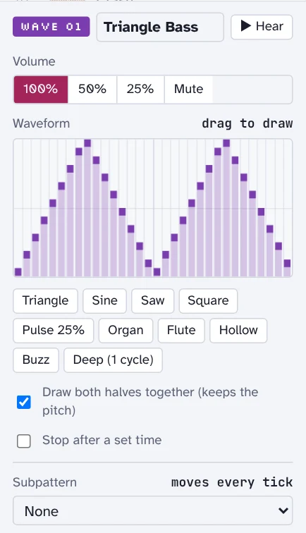
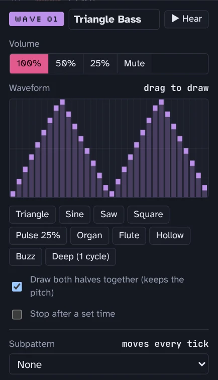
A wave instrument plays a waveform of 32 steps, each from 0 to 15. Drag on the grid to draw one, or start from a shape: triangle, sine, saw, square, pulse, organ, flute, hollow, buzz or deep.
- Draw both halves together keeps the two halves identical, which keeps the pitch right. A waveform that holds a single cycle across all 32 steps sounds an octave lower than the notes you write; the editor warns you when that's the case.
- Volume has only four levels: 100%, 50%, 25% and mute.
- Stop after a set time can end notes after up to a second.
On export, identical waveforms are shared, so several instruments can use one waveform slot.
Noise instruments
- Noise type: Smooth is white noise, good for snares, hats and explosions. Metallic uses a short repeating pattern that sounds tonal and buzzy, good for kicks and toms.
- Default pitch sets the pitch new hits use. Lower is deeper.
- The volume, envelope and length work as on pulse instruments.
Subpatterns
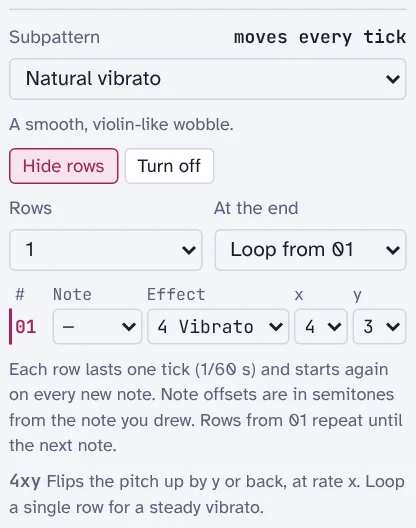
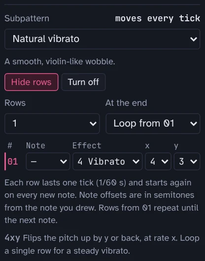
A subpattern is a tiny pattern inside an instrument that runs on every note it plays, one row per tick (1/60 s). It's how you get arpeggiated chords, vibrato, pitch drops and other movement without writing effects on every note. Subpatterns export as hUGE v6 instrument subpatterns, so they work unchanged in hUGETracker and GB Studio.
Pick a preset from the Subpattern menu in the instrument editor: vibratos (natural, delayed, deep), arpeggios (major, minor, major 7, power, lazy, swell), octave flutter, trill, scoop in, pitch drop, pluck lead, duty shimmer and thin attack for pulse; kick drop, metallic snap, rattle and rising or falling hiss for noise.
Editing the rows
Edit rows opens the grid. Each row can shift the note by some semitones and run one effect. Set how many Rows there are (up to 32), and what happens At the end: Stop holds where it finished, and Loop from repeats from a row until the next note.
Only effects that work inside hUGEDriver's subpatterns are offered: arpeggio, slides, vibrato, duty, volume step and set volume (on noise: duty and the two volume effects). Pitch shifts and duty changes are click-free. The volume effects restart the note, which can click a little.
Note effects
Each note can carry one hUGE effect, set in the note panel or from the right-click menu (Effect ▸). Effects show as a small triangle in the note's corner. The right-click menu has ready-made settings, like a major chord arpeggio or a natural vibrato; the note panel lets you set x and y yourself.
hUGEDriver applies most effects only on the row they're written on, so fUGE repeats ongoing effects (arpeggio, slides, glide and vibrato) on every row the note covers. The full list is in the effects reference.
Swell
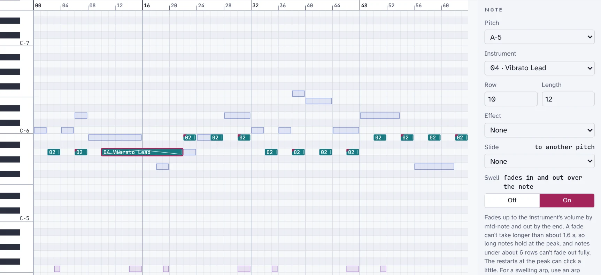
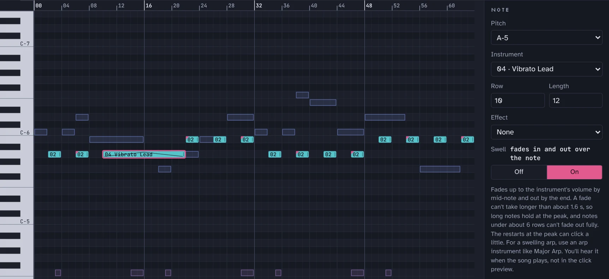
Swell fades a note in from silence, peaks in the middle, then fades it out by its end, whatever its length. Select notes and set Swell to On in the note panel, or choose Swell over the note from the right-click menu.
- On pulse, the Game Boy's own volume envelope does the fading, so it's smooth. It rises to the instrument's volume. A hardware fade can't take longer than about 1.6 s, so long notes hold at the peak in the middle, and very short ones (under about 6 rows at speed 7) can't fade out completely.
- On wave, the volume steps through the channel's four levels, up and back down.
- For a swelling chord, use an arpeggio instrument such as Major Arp with Swell on.
Swell needs a pulse instrument whose envelope is set to Hold; the note panel warns you otherwise. Turning the fade around restarts the note twice at the peak, which can click a little. Swell uses the effect column on the rows where the volume changes, so a note's own effect pauses on those rows. You hear it on playback, not when you click a note to preview it.
There's also a Swell Arp preset with a fixed swell of about a second, which suits short notes.
Echo
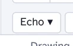
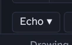
The classic Game Boy echo repeats each note a little later, more quietly. To add one, select the notes (Ctrl+A for the whole pattern) and choose Echo ▾ in the note panel, or Echo in the right-click menu. Then pick where and how late:
- On the other pulse channel (from a pulse track): the echo plays alongside your melody. Echoes that run past the end of the pattern carry on into the next order.
- On this track, in the gaps: for a single channel, or the wave channel. Notes longer than the delay are shortened so the echo can sound, and notes with no gap after them get no echo.
Echoes use a quieter copy of each instrument, named after it with "echo" on the end (half the volume, or one wave level lower). fUGE reuses that copy next time, so to make every echo louder or softer, just change its volume.
Echoes are ordinary notes, so they don't follow later changes to your melody. Instruments that fade in from silence can't be made quieter this way.
Keyboard piano
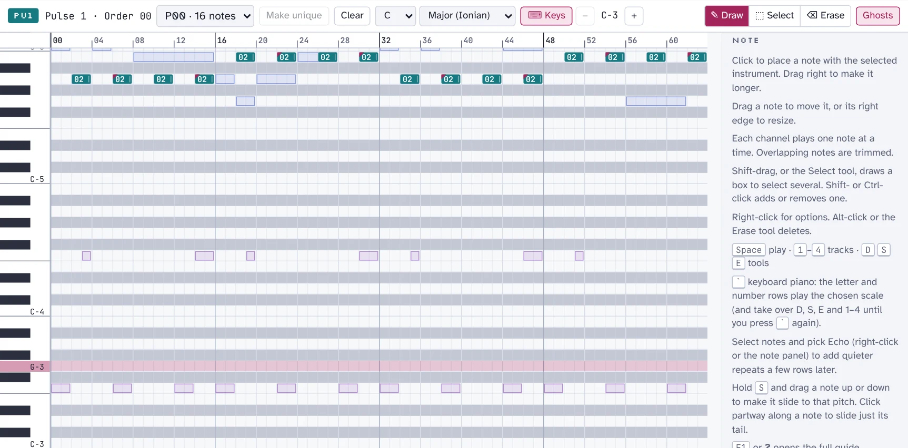
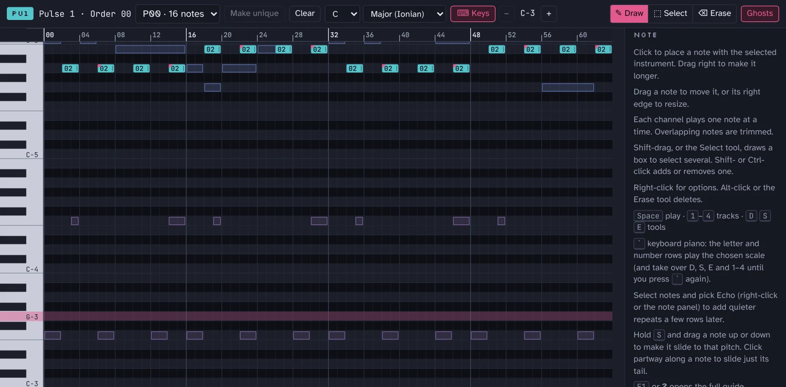
Press ` (the key left of 1) or ⌨ Keys in the pattern toolbar to play the current instrument from your computer keyboard. Press it again to turn it off.
- With a scale chosen, each keyboard row climbs through the scale, starting on its key note, one octave apart: Z row, A row, Q row, then the number row.
- With no scale (Free), it's the usual tracker layout: the Z and Q rows are white keys, and the S and 2 rows the black keys between them.
- − and + next to the button change the octave. The note shown is the one on Z; it starts at C-3, the lowest note hUGE can play.
- On the noise track, the keys play the drum lanes in order: Z is the first lane, X the second, and so on.
While it's on, letter and number keys play notes instead of their shortcuts (such as D, S, E and 1–4). Space, the arrow keys, Delete, Esc and Ctrl shortcuts still work. Keys go by their position, not the letter printed on them, so the layout is the same on any keyboard. A note sounds until you let go, and it's silent while the song plays, because the song is using the channels.
Sound effect projects
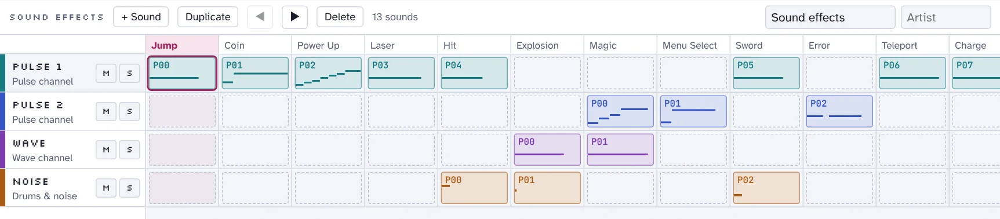
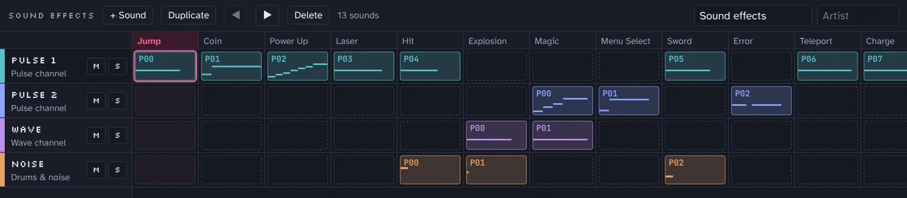
New ▾ → New sound effects starts a set of sound effects instead of a song. Choose with examples for 13 ready-made sounds to learn from or adapt: jump, coin, power-up, laser, hit, explosion, magic, menu select, sword, error, teleport, charge and footsteps.
- Each column in the top panel is one sound. Click its name to select it; rename it and set its length (2–64 rows) in the pattern toolbar, and its speed in the top bar.
- Space plays the selected sound once. Loop sound keeps repeating it while you tweak.
- + Sound adds a new one; Duplicate copies one so you can make a variation.
- The Sound effects group in Presets… has instruments made for this: sweeps, zaps, booms, hits, slashes and more. Sweeps only work on Pulse 1.
Exporting sound effects
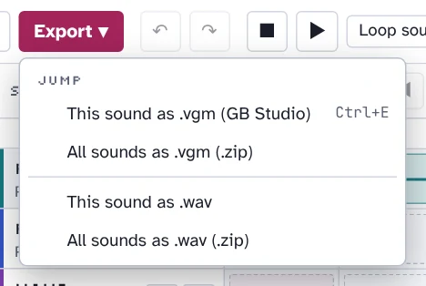
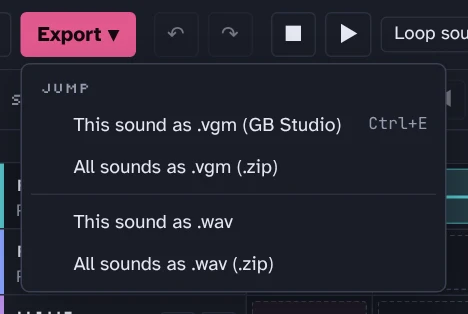
In a sound effects project, Export ▾ offers:
- .vgm for GB Studio. It only writes to the channels the sound uses, one frame per tick, and ends with a note cut on those channels. Copy it into your GB Studio project's
assets/soundsfolder. - .wav, rendered through fUGE's sound chip emulation, for games made with other engines.
- Either format for every sound at once, as a
.zip.
Because a .vgm never touches the channels it doesn't use, your music keeps playing on those channels while the sound plays.
Saving and autosave
- Save (Ctrl+S) writes the whole project as a
.fuge.jsonfile. Shift-click Save, or press Ctrl+Shift+S, to save a copy. - Open (Ctrl+O) loads a
.fuge.json. You can also drag the file onto the window. - fUGE also saves your work in the browser as you go, and restores it next time you open it. Save to a file as well, though: clearing the browser's data clears the autosave too.
Saving downloads the file, so it lands wherever your browser keeps downloads.
Exporting songs
Export ▾ (or Ctrl+E for the first option) offers:
- Song as .uge: a hUGETracker v6 song with your patterns, orders, instruments, waveforms and subpatterns.
- Song as .wav: the song rendered through fUGE's sound chip emulation. It ends where the song ends, with every channel cut, just like hUGETracker's export. Muted or soloed channels are left out, so you can export stems.
Playback and both exports use exactly the same compiled song, so what you hear is what you get.
Using fUGE with GB Studio
- Export the song as
.uge. - Copy it into your GB Studio project's
assets/musicfolder. - Pick the song in a Play Music event. GB Studio plays
.ugesongs with hUGEDriver, the driver fUGE is built around. If your project is set to the older GBT Player format, switch it to hUGETracker in the project's settings.
For sound effects, export .vgm files into assets/sounds and play them with a Play Sound Effect event.
hUGETracker and GBDK
A fUGE .uge opens in hUGETracker like any other song, so you can finish a song there, or use hUGETracker's own export to assembly or C for a GBDK or assembly project with hUGEDriver.
fUGE's sound engine is checked tick by tick against the real hUGEDriver running in an emulator, so songs sound the same in all of them.
Keyboard shortcuts
| Keys | Action |
|---|---|
| Space | Play / stop |
| 1 – 4 | Edit Pulse 1, Pulse 2, Wave or Noise |
| D S E | Draw, Select and Erase tools |
| ` | Keyboard piano on/off |
| Ctrl+A | Select all notes in the pattern |
| Ctrl+C / X / V | Copy, cut, paste |
| Ctrl+D | Duplicate the selection |
| Delete | Delete the selection |
| ↑ ↓ | Transpose by a semitone (Shift: an octave) |
| ← → | Nudge by a row (Shift: a beat), or change order when nothing is selected |
| Esc | Clear the selection, close a menu |
| Ctrl+Z | Undo |
| Ctrl+Shift+Z, Ctrl+Y | Redo |
| Ctrl+S | Save (Shift: save a copy) |
| Ctrl+O | Open |
| Ctrl+E | Export (.uge for songs, .vgm for the selected sound) |
| F1 | Open these docs |
| Mouse | Action |
|---|---|
| Click / drag | Place a note / set its length as you place it |
| Shift-drag | Box select with any tool |
| Shift- or Ctrl-click | Add a note to the selection, or remove it |
| Alt-click | Delete a note |
| Right-click | Menu for notes, slots, orders, channels and instruments |
| Double-click an empty slot | Give it a new pattern |
On a Mac, use ⌘ wherever it says Ctrl.
Effects reference
Effects are written Exy in hUGETracker: one hex digit for the effect and two for its settings.
| Effect | Name | What it does |
|---|---|---|
0xy | Arpeggio | Cycles the note, +y and +x semitones every tick. 047 is a major chord, 037 minor. |
1xy | Slide up | Bends the pitch up by xy every tick. |
2xy | Slide down | Bends the pitch down by xy every tick. |
3xy | Glide to note | Slides from the previous note to this one at speed xy. |
4xy | Vibrato | Wobbles the pitch by depth y at rate x. 43-ish is natural; a lower x is faster. |
5xy | Master volume | Overall left (x) and right (y) volume, 0–7. |
7xy | Note delay | Starts the note xy ticks into the row. Must be less than the speed. |
8xy | Panning | Which channels play in the left (x) and right (y) speaker: 1 = pulse 1, 2 = pulse 2, 4 = wave, 8 = noise. |
9xy | Set duty | Pulse width: 00 12.5%, 40 25%, 80 50%, C0 75%. |
Axy | Volume step | Restarts the note x louder or y quieter. |
C0y | Set volume | Restarts the note at volume y (0–F). On wave, picks the nearest of its four levels. |
Exy | Note cut | Silences the channel xy ticks into the row. |
Fxy | Set speed | Changes the song speed from here on. |
Arpeggio, slides, glide and vibrato are for pulse and wave notes only. The jump effects (B and D) aren't offered, because fUGE's arrangement already decides what plays next.
Limits and hardware quirks
fUGE aims to sound exactly like the hardware, including its quirks:
- Each channel plays one note at a time.
- Up to 15 instruments of each type per song, 64 rows per pattern, and pitches from C-3 to B-8.
- Subpatterns can have up to 32 rows when they loop, or 30 when they stop.
- Changing the volume of a pulse or noise note means restarting it, which can click a little. That applies to the volume effects, and to the turnaround in Swell. Use the instrument's envelope for smooth fades.
- The wave channel only has four volume levels.
- Only Pulse 1 has the pitch sweep.
- The same vibrato depth sounds wider on high notes, because the Game Boy works in frequency steps, not semitones.